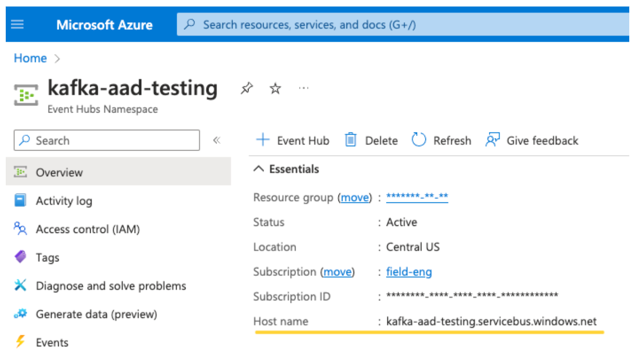
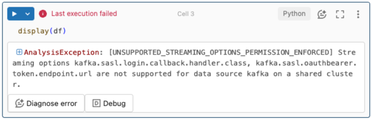
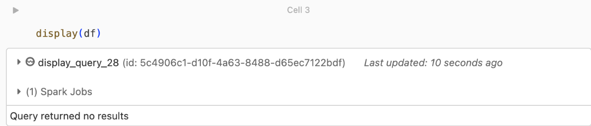

Stream processing with Apache Kafka and Databricks
This article describes how you can use Apache Kafka as either a source or a sink when running Structured Streaming workloads on Databricks.
For more Kafka, see the Kafka documentation.
Read data from Kafka
The following is an example for a streaming read from Kafka:
df = (spark.readStream
.format("kafka")
.option("kafka.bootstrap.servers", "<server:ip>")
.option("subscribe", "<topic>")
.option("startingOffsets", "latest")
.load()
)
Databricks also supports batch read semantics for Kafka data sources, as shown in the following example:
df = (spark
.read
.format("kafka")
.option("kafka.bootstrap.servers", "<server:ip>")
.option("subscribe", "<topic>")
.option("startingOffsets", "earliest")
.option("endingOffsets", "latest")
.load()
)
For incremental batch loading, Databricks recommends using Kafka with Trigger.AvailableNow. See Configuring incremental batch processing.
In Databricks Runtime 13.1 and above, Databricks provides a SQL function for reading Kafka data. Streaming with SQL is supported only in Delta Live Tables or with streaming tables in Databricks SQL. See read_kafka table-valued function.
Configure Kafka Structured Streaming reader
Databricks provides the kafka keyword as a data format to configure connections to Kafka 0.10+.
The following are the most common configurations for Kafka:
There are multiple ways of specifying which topics to subscribe to. You should provide only one of these parameters:
Option |
Value |
Description |
|---|---|---|
subscribe |
A comma-separated list of topics. |
The topic list to subscribe to. |
subscribePattern |
Java regex string. |
The pattern used to subscribe to topic(s). |
assign |
JSON string |
Specific topicPartitions to consume. |
Other notable configurations:
Option |
Value |
Default Value |
Description |
|---|---|---|---|
kafka.bootstrap.servers |
Comma-separated list of host:port. |
empty |
[Required] The Kafka |
failOnDataLoss |
|
|
[Optional] Whether to fail the query when it’s possible that data was lost. Queries can permanently fail
to read data from Kafka due to many scenarios such as deleted topics, topic truncation before processing,
and so on. We try to estimate conservatively whether data was possibly lost or not. Sometimes this can
cause false alarms. Set this option to |
minPartitions |
Integer >= 0, 0 = disabled. |
0 (disabled) |
[Optional] Minimum number of partitions to read from Kafka. You can
configure Spark to use an arbitrary minimum of partitions to read from Kafka using the |
kafka.group.id |
A Kafka consumer group ID. |
not set |
[Optional] Group ID to use while reading from Kafka. Use this with caution. By default, each query generates a unique group ID for reading data. This ensures that each query has its own consumer group that does not face interference from any other consumer, and therefore can read all of the partitions of its subscribed topics. In some scenarios (for example, Kafka group-based authorization), you may want to use specific authorized group IDs to read data. You can optionally set the group ID. However, do this with extreme caution as it can cause unexpected behavior.
|
startingOffsets |
earliest , latest |
latest |
[Optional] The start point when a query is started, either “earliest” which is from the earliest offsets, or a json string specifying a starting offset for each TopicPartition. In the json, -2 as an offset can be used to refer to earliest, -1 to latest. Note: For batch queries, latest (either implicitly or by using -1 in json) is not allowed. For streaming queries, this only applies when a new query is started, and that resuming will always pick up from where the query left off. Newly discovered partitions during a query will start at earliest. |
See Structured Streaming Kafka Integration Guide for other optional configurations.
Schema for Kafka records
The schema of Kafka records is:
Column |
Type |
|---|---|
key |
binary |
value |
binary |
topic |
string |
partition |
int |
offset |
long |
timestamp |
long |
timestampType |
int |
The key and the value are always deserialized as byte arrays with the ByteArrayDeserializer. Use DataFrame operations (such as cast("string")) to explicitly deserialize the keys and values.
Write data to Kafka
The following is an example for a streaming write to Kafka:
(df
.writeStream
.format("kafka")
.option("kafka.bootstrap.servers", "<server:ip>")
.option("topic", "<topic>")
.start()
)
Databricks also supports batch write semantics to Kafka data sinks, as shown in the following example:
(df
.write
.format("kafka")
.option("kafka.bootstrap.servers", "<server:ip>")
.option("topic", "<topic>")
.save()
)
Configure Kafka Structured Streaming writer
Important
In Databricks Runtime 13.1 and above, a newer version of the kafka-clients library is used that enables idempotent writes by default. If a Kafka sink uses version 2.8.0 or below with ACLs configured but without IDEMPOTENT_WRITE enabled, the write fails with the error message org.apache.kafka.common.KafkaException: Cannot execute transactional method because we are in an error state.
You can resolve this error by upgrading to Kafka version 2.8.0 or above or by setting .option(“kafka.enable.idempotence”, “false”) while configuring your Structured Streaming writer.
The schema provided to the DataStreamWriter interacts with the Kafka sink. You can use the following fields:
Column name |
Required or optional |
Type |
|---|---|---|
|
optional |
|
|
required |
|
|
optional |
|
|
optional (ignored if |
|
|
optional |
|
The following are common options set while writing to Kafka:
Option |
Value |
Default value |
Description |
|---|---|---|---|
|
A comma-separated list of |
none |
[Required] The Kafka |
|
|
not set |
[Optional] Sets the topic for all rows to be written. This option overrides any topic column that exists in the data. |
|
|
|
[Optional] Whether to include the Kafka headers in the row. |
See Structured Streaming Kafka Integration Guide for other optional configurations.
Retrieve Kafka metrics
You can get the average, min, and max of the number of offsets that the streaming query is behind the latest available offset among all the subscribed topics with the avgOffsetsBehindLatest, maxOffsetsBehindLatest, and minOffsetsBehindLatest metrics. See Reading Metrics Interactively.
Note
Available in Databricks Runtime 9.1 and above.
Get the estimated total number of bytes that the query process has not consumed from the subscribed topics by examining the value of estimatedTotalBytesBehindLatest. This estimate is based on the batches that were processed in the last 300 seconds. The timeframe that the estimate is based on can be changed by setting the option bytesEstimateWindowLength to a different value. For example, to set it to 10 minutes:
df = (spark.readStream
.format("kafka")
.option("bytesEstimateWindowLength", "10m") # m for minutes, you can also use "600s" for 600 seconds
)
If you are running the stream in a notebook, you can see these metrics under the Raw Data tab in the streaming query progress dashboard:
{
"sources" : [ {
"description" : "KafkaV2[Subscribe[topic]]",
"metrics" : {
"avgOffsetsBehindLatest" : "4.0",
"maxOffsetsBehindLatest" : "4",
"minOffsetsBehindLatest" : "4",
"estimatedTotalBytesBehindLatest" : "80.0"
},
} ]
}
Use SSL to connect Databricks to Kafka
To enable SSL connections to Kafka, follow the instructions in the Confluent documentation Encryption and Authentication with SSL. You can provide the configurations described there, prefixed with kafka., as options. For example, you specify the trust store location in the property kafka.ssl.truststore.location.
Databricks recommends that you:
Store your certificates in cloud object storage. You can restrict access to the certificates only to clusters that can access Kafka. See Data governance guide.
Store your certificate passwords as secrets in a secret scope.
The following example uses object storage locations and Databricks secrets to enable an SSL connection:
df = (spark.readStream
.format("kafka")
.option("kafka.bootstrap.servers", ...)
.option("kafka.security.protocol", "SASL_SSL")
.option("kafka.ssl.truststore.location", <truststore-location>)
.option("kafka.ssl.keystore.location", <keystore-location>)
.option("kafka.ssl.keystore.password", dbutils.secrets.get(scope=<certificate-scope-name>,key=<keystore-password-key-name>))
.option("kafka.ssl.truststore.password", dbutils.secrets.get(scope=<certificate-scope-name>,key=<truststore-password-key-name>))
)
Use Amazon Managed Streaming for Kafka with IAM
Preview
This feature is in Public Preview in Databricks Runtime 13.3 LTS and above.
You can use Databricks to connect to Amazon Managed Streaming for Kafka (MSK) using IAM. For configuration instructions for MSK, see Amazon MSK configuration.
Note
The following configurations are only required if you are using IAM to connect to MSK. You can also configure connections to MSK using options provided by the Apache Spark Kafka connector.
Databricks recommends managing your connection to MSK using an instance profile. See Instance profiles.
You must configure the following options to connect to MSK with an instance profile:
"kafka.sasl.mechanism" -> "AWS_MSK_IAM",
"kafka.sasl.jaas.config" ->
"shadedmskiam.software.amazon.msk.auth.iam.IAMLoginModule required;",
"kafka.security.protocol" -> "SASL_SSL",
"kafka.sasl.client.callback.handler.class" ->
"shadedmskiam.software.amazon.msk.auth.iam.IAMClientCallbackHandler"
"kafka.sasl.mechanism": "AWS_MSK_IAM",
"kafka.sasl.jaas.config":
"shadedmskiam.software.amazon.msk.auth.iam.IAMLoginModule required;",
"kafka.security.protocol": "SASL_SSL",
"kafka.sasl.client.callback.handler.class":
"shadedmskiam.software.amazon.msk.auth.iam.IAMClientCallbackHandler"
You can optionally configure your connection to MSK with an IAM user or IAM role instead of an instance profile. You must provide values for your AWS access key and secret key using the environmental variables AWS_ACCESS_KEY_ID and AWS_SECRET_ACCESS_KEY. See Reference a secret in an environment variable.
In addition, if you choose to configure your connection using an IAM role, you must modify the value provided to kafka.sasl.jaas.config to include the role ARN, as in the following example: shadedmskiam.software.amazon.msk.auth.iam.IAMLoginModule required awsRoleArn="arn:aws:iam::123456789012:role/msk_client_role".
Service Principal authentication with Microsoft Entra ID and Azure Event Hubs
Databricks supports the authentication of Spark jobs with Event Hubs services. This authentication is done via OAuth with Microsoft Entra ID (formerly known as Azure Active Directory or AAD).
Databricks supports this authentication with a client ID and secret in Databricks Runtime 12.2 LTS and above on assigned clusters and Delta Live Tables, but does not currently support this authentication with a certificate. This authentication does not work on shared clusters or on Unity Catalog Delta Live Tables.
Configuring the Structured Streaming Kafka Connector
To perform authentication with Microsoft Entra ID (AAD), you’ll need the following values:
A tenant ID. You can find this in the Microsoft Entra ID services tab.
A clientID (also known as Application ID).
A client secret. Once you have this, you should add it as a secret to your Databricks Workspace. To add this secret, see Secret management.
An EventHubs topic. You can find a list of topics in the Event Hubs section under the Entities section on a specific Event Hubs Namespace page. To work with multiple topics, you can set the IAM role at the Event Hubs level.
An EventHubs server. You can find this on the overview page of your specific Event Hubs namespace:

Additionally, to use Entra ID, we need to tell Kafka to use the OAuth SASL mechanism (SASL is a generic protocol, and OAuth is a type of SASL “mechanism”):
kafka.security.protocolshould beSASL_SSLkafka.sasl.mechanismshould beOAUTHBEARERkafka.sasl.login.callback.handler.classshould be a fully qualified name of the Java class with a value ofkafkashadedto the login callback handler of our shaded Kafka class. See the following example for the exact class.
Example
Next, let’s look at a running example:
# This is the only section you need to modify for auth purposes!
# ------------------------------
tenant_id = "..."
client_id = "..."
client_secret = dbutils.secrets.get("your-scope", "your-secret-name")
event_hubs_server = "..."
event_hubs_topic = "..."
# -------------------------------
sasl_config = f'kafkashaded.org.apache.kafka.common.security.oauthbearer.OAuthBearerLoginModule required clientId="{client_id}" clientSecret="{client_secret}" scope="https://{event_hubs_server}/.default" ssl.protocol="SSL";'
kafka_options = {
# Port 9093 is the EventHubs Kafka port
"kafka.bootstrap.servers": f"{event_hubs_server}:9093",
"kafka.sasl.jaas.config": sasl_config,
"kafka.sasl.oauthbearer.token.endpoint.url": f"https://login.microsoft.com/{tenant_id}/oauth2/v2.0/token",
"subscribe": event_hubs_topic,
# You should not need to modify these
"kafka.security.protocol": "SASL_SSL",
"kafka.sasl.mechanism": "OAUTHBEARER",
"kafka.sasl.login.callback.handler.class": "kafkashaded.org.apache.kafka.common.security.oauthbearer.secured.OAuthBearerLoginCallbackHandler"
}
df = spark.readStream.format("kafka").options(**kafka_options)
display(df)
// This is the only section you need to modify for auth purposes!
// -------------------------------
val tenantId = "..."
val clientId = "..."
val clientSecret = dbutils.secrets.get("your-scope", "your-secret-name")
val eventHubsServer = "..."
val eventHubsTopic = "..."
// -------------------------------
val saslConfig = s"""kafkashaded.org.apache.kafka.common.security.oauthbearer.OAuthBearerLoginModule required clientId="$clientId" clientSecret="$clientSecret" scope="https://$eventHubsServer/.default" ssl.protocol="SSL";"""
val kafkaOptions = Map(
// Port 9093 is the EventHubs Kafka port
"kafka.bootstrap.servers" -> s"$eventHubsServer:9093",
"kafka.sasl.jaas.config" -> saslConfig,
"kafka.sasl.oauthbearer.token.endpoint.url" -> s"https://login.microsoft.com/$tenantId/oauth2/v2.0/token",
"subscribe" -> eventHubsTopic,
// You should not need to modify these
"kafka.security.protocol" -> "SASL_SSL",
"kafka.sasl.mechanism" -> "OAUTHBEARER",
"kafka.sasl.login.callback.handler.class" -> "kafkashaded.org.apache.kafka.common.security.oauthbearer.secured.OAuthBearerLoginCallbackHandler"
)
val scalaDF = spark.readStream
.format("kafka")
.options(kafkaOptions)
.load()
display(scalaDF)
Handling potential errors
Streaming options are not supported.
If you try to use this authentication mechanism in a Shared cluster, Serverless, or Unity Catalog Delta Live Tables, you might receive the following error:
To resolve this error, create an Assigned (also known as Single user) cluster and use that cluster. Other cluster types are not currently supported. See Access modes.
Failed to create a new
KafkaAdminClient.This is an internal error that Kafka throws if any of the following authentication options are incorrect:
Client ID (also known as Application ID)
Tenant ID
EventHubs server
To resolve the error, verify that the values are correct for these options.
Additionally, you might see this error if you modify the configuration options provided by default in the example (that you were asked not to modify), such as
kafka.security.protocol.There are no records being returned
If you are trying to display or process your DataFrame but aren’t getting results, you will see the following in the UI.
This message means that authentication was successful, but EventHubs didn’t return any data. Some possible (though by no means exhaustive) reasons are:
You specified the wrong EventHubs topic.
The default Kafka configuration option for
startingOffsetsislatest, and you’re not currently receiving any data through the topic yet. You can setstartingOffsetstoearliestto start reading data starting from Kafka’s earliest offsets.